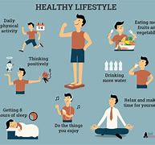

Taking Control of Men's Health: Breaking the Silence
Men's health is often overlooked, but it's crucial to address the unique challenges men face. This blog aims to break the silence surrounding men's health, exploring common issues, and providing actionable tips for improvement.
Common Men's Health Issues:
- Mental Health: Depression, anxiety, and substance abuse affect men disproportionately. Stigma and societal expectations can prevent men from seeking help.
- Prostate Health: Prostate cancer, benign prostatic hyperplasia (BPH), and prostatitis require attention. Regular check-ups and healthy habits can help prevent or manage these issues.
- Testosterone and Hormone Balance: Hormonal imbalances can impact energy, libido, and overall health. Understanding the role of testosterone and seeking medical advice when necessary is crucial.
- Cardiovascular Health: Heart disease, high blood pressure, and stroke are leading causes of death among men. Healthy habits and regular check-ups can mitigate these risks.
- Nutrition and Weight Management: Poor diet and excess weight contribute to various health issues. Balanced eating and regular exercise can improve overall well-being.
Breaking the Silence:
- Encouraging Open Conversations: Create safe spaces for men to discuss their health concerns without fear of judgment.
- Reducing Stigma: Educate yourself and others about men's health issues, promoting understanding and empathy.
- Promoting Regular Health Check-Ups: Encourage men to prioritize preventive care, including regular doctor visits and screenings.
Taking Action:
-
Healthy Habits

Engage in regular exercise, balanced eating, and stress management techniques like meditation or yoga.
-
Stress Management
Develop healthy coping mechanisms, such as hobbies or spending time with loved ones.
-
Getting Enough Sleep
Prioritize sleep for physical and mental rejuvenation.
-
Staying Connected
Nurture relationships with friends, family, and healthcare professionals.
Prostate Health
- Understanding Prostate Cancer Risks and Symptoms: Educate yourself on risk factors, signs, and screening options.
- Importance of Regular Prostate Exams: Schedule regular check-ups with your healthcare provider.
- Healthy Habits for Prostate Health: Engage in regular exercise, balanced eating, and stress management.
Mental Health Matters
- Recognizing Signs of Depression and Anxiety: Identify symptoms and seek professional help when needed.
- Seeking Professional Help: Consult mental health professionals or support groups.
- Building a Support Network: Surround yourself with loved ones, friends, and healthcare professionals.
Conclusion
Men's health is just as important as women's health. By acknowledging the unique challenges men face and taking proactive steps, we can improve overall well-being. Remember, it's okay to ask for help, and together, we can break the silence surrounding men's health.
Additional Resources
- List of men's health organizations and support groups
- Recommended books and articles on men's health
- Online forums and communities for men's health discussions
Visit my homepage at John's Blog